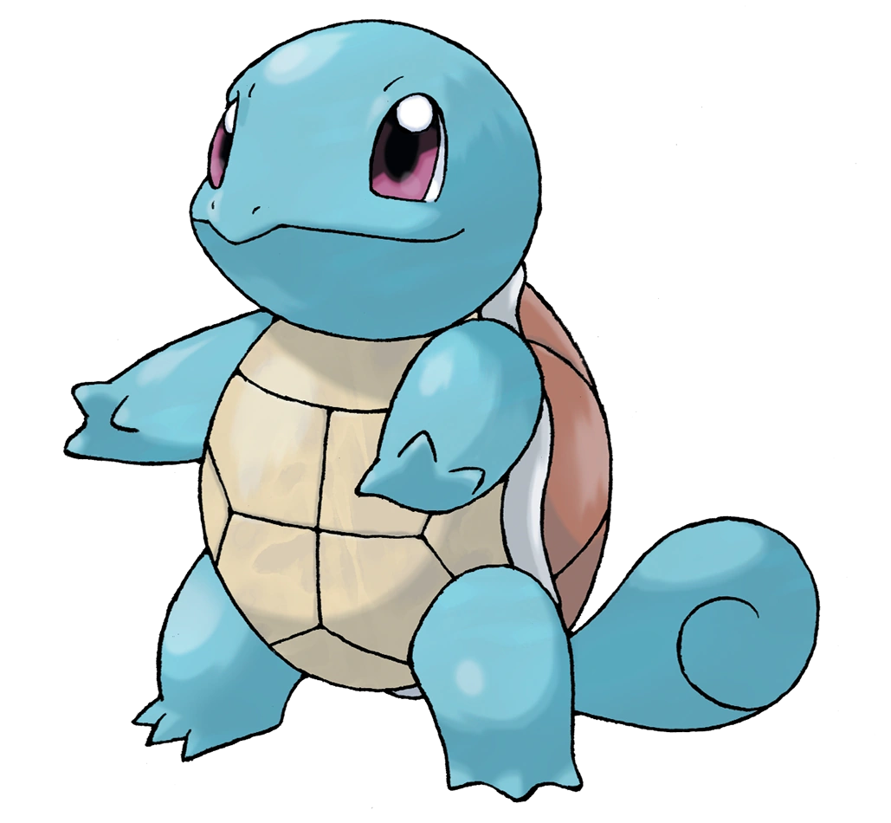

Agua
Blastoise está basado en una tortuga con dos cañones. Es una enorme tortuga bípeda, que puede extender unos poderosos cañones situados en su espalda para disparar potentes chorros de agua, con la fuerza suficiente para quebrar muros de hormigón o hacer agujeros en planchas de acero. Para evitar el retroceso, planta firmemente sus patas traseras en el suelo antes de usar sus cañones, además de subir deliberadamente de peso. Incluso se le ha visto usar la presión del agua de sus cañones para poder volar. Su tonalidad es todavía un poco más oscura que la de Wartortle. Posee un grueso cráneo y mandíbula que le sirven para usar movimientos como mordisco o cabezazo.
